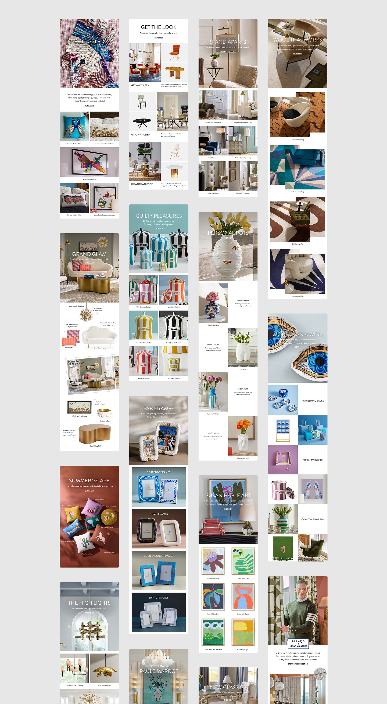
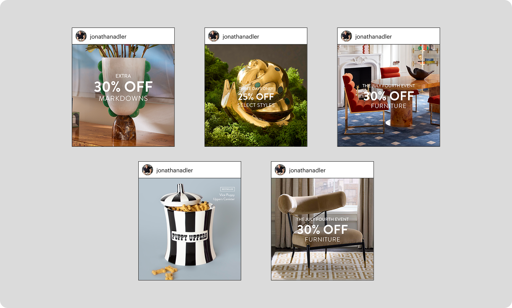
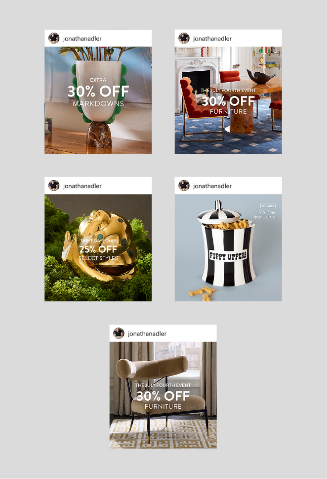
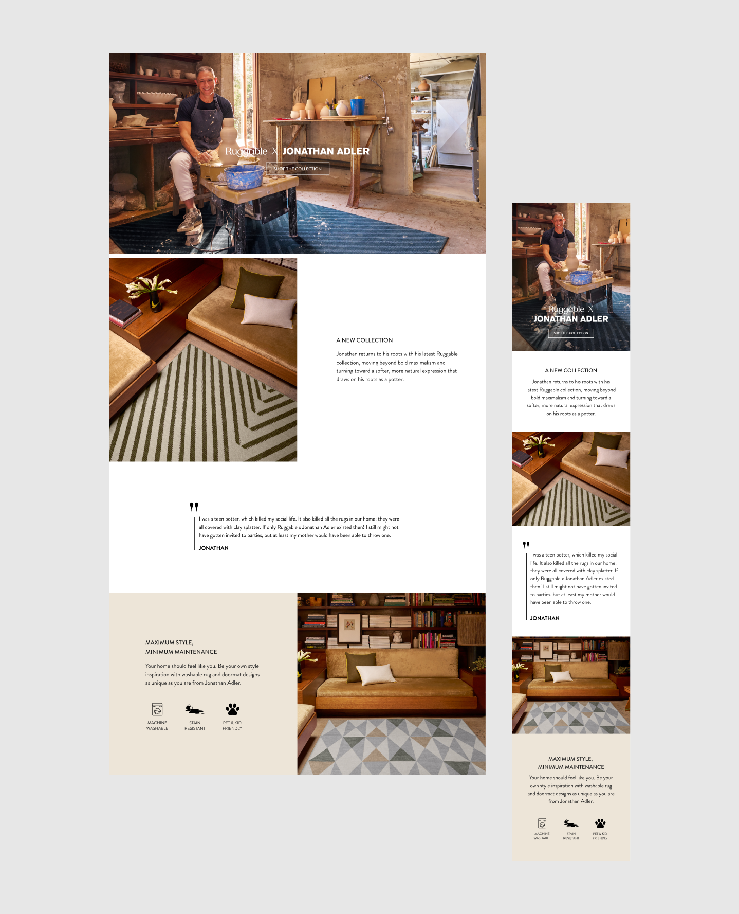
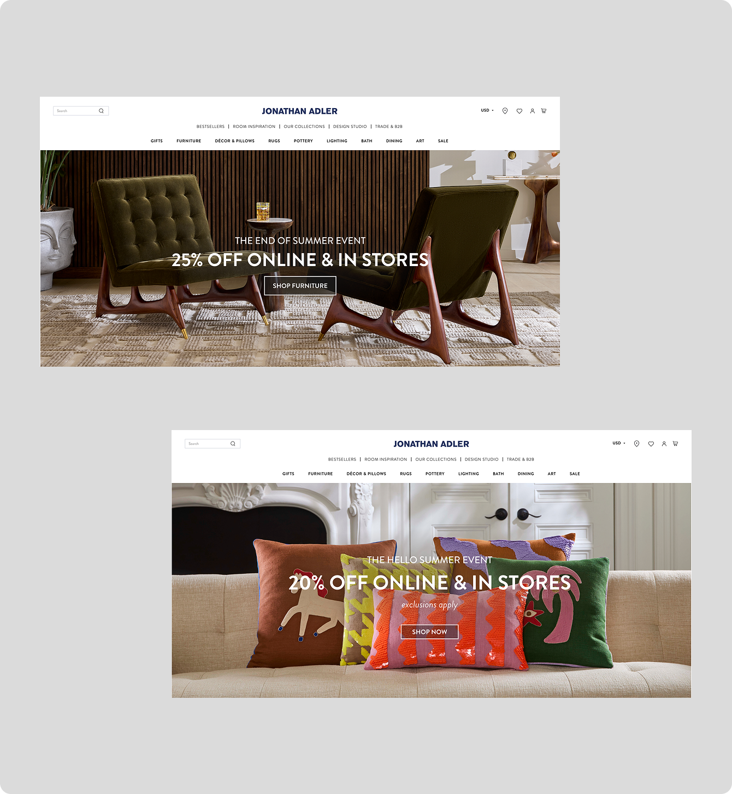

I design daily emails for US and UK markets, moving from Figma to Klaviyo. To keep up with a fast-paced daily schedule without sacrificing quality, I built six modular templates for core commercial sends, alongside editorial layouts for richer, magazine-style storytelling.

I designed paid social ads for Meta to support brand campaigns, product launches, and our weekly promotional rollouts.
Starting in Figma, I created static and video ad creative tailored to multiple platform placements and size variations. I also built dynamic ad variations in Marpipe for multivariate creative testing, establishing a streamlined asset handoff for our external partners to seamlessly deploy high-performing ad sets at scale.


Designed homepage banners, custom landing pages for brand collaborations, seasonal gift guides, and curated style guides for the Jonathan Adler website. I also redesigned the brand's Amazon storefront. My approach centers on keeping the product at the forefront, organizing content into intuitive categories, and incorporating lifestyle imagery that shows how individual pieces come together within a larger space. I design mobile-first, adapting each layout for larger desktop screens.
I collaborate closely with web developers to ensure designs translate across devices.

